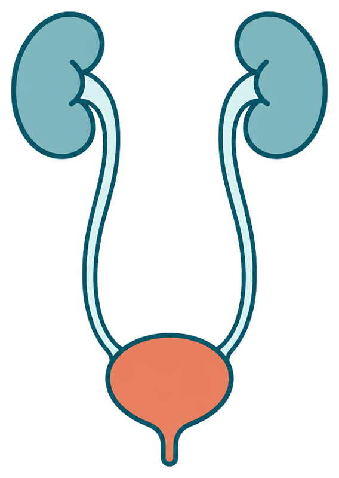

Protocolo de antibióticos na hemodiálise1 · Quem recebe o quê
| Situação | Antibiótico | Duração | Atenção |
|---|---|---|---|
 Cateter Cateter | |||
| Bacteremia, empírico | Vancomicina + ceftazidima | 14 dias após HC negativa | Lock se o cateter fica |
| MSSA | Cefazolina (suspender vanco) | 14 dias | Ver regra do S. aureus |
| MRSA ou SCN resistente | Vancomicina (suspender cefta) | 14 dias | |
| Gram-negativo | Pelo antibiograma (suspender vanco) | 14 dias | |
| S. aureus | Pela sensibilidade (acima) | Trocado: 14 dias Com lock: 3 semanas | Eco em todos. Febre após 48-72 h ou HC de 72 h positiva: trocar por fio-guia |
| Candida | Pela cultura | Retirar o cateter sempre | |
| Endocardite | Pela cultura | 4 semanas valva protética: 6 | Avaliar com cardiologia |
| Óstio | Mupirocina tópica sem mupirocina: cefazolina | 14 dias | Gaze + fita, sem filme transparente. Com secreção: cultura + HC |
| Tunelite | Cefazolina MRSA prévio: vanco · Pseudomonas ou falha: + cefta · bacteremia: vanco + cefta | Pela cultura | Lock não trata o túnel: trocar por fio-guia com túnel novo |
 FAV e prótese FAV e prótese | |||
| FAV nativa | Pela cultura | 2 semanas | Doppler inicial |
| Prótese | Pela cultura | 4 semanas | Doppler semanal. Extensa, abscesso, exposta ou sangrando: cirurgia vascular |
 Infecção urinária · urocultura + antibiograma para todos, sem urocultura de controle | |||
| Adere ao oral | Ciprofloxacino VO | 7 dias | |
| Não adere ao oral | Ceftazidima EV alternativa: amicacina EV (ototóxica) | 7 dias | |
 Pneumonia · raio-X nos casos arrastados ou graves Pneumonia · raio-X nos casos arrastados ou graves | |||
| Em geral | Amoxicilina-clavulanato + azitromicina VO | 5 dias azitro: 3 dias | |
| Doença pulmonar prévia | Levofloxacino VO | 3 doses | |
| Sem condição social | Levofloxacino EV ou VO na sessão | 3 doses | Mesma dose por qualquer via |
 Celulite Celulite | |||
| Em geral | Cefalexina VO ou cefazolina EV | 7 dias | |
| MRSA | Clindamicina VO | 7 dias | |
| Grave | Vancomicina | 14 dias | |
HC: hemocultura · SCN: estafilococo coagulase-negativo · Doses na página 2 · Referências no documento teórico1/2